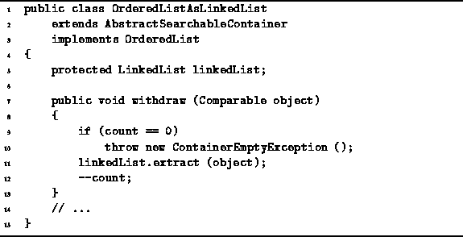

Data Structures and Algorithms
with Object-Oriented Design Patterns in Java
Data Structures and Algorithms
with Object-Oriented Design Patterns in Java
The withdraw method is used to remove a specific
object instance from an ordered list.
The implementation of the withdraw method for
the OrderedListAsLinkedList class
is given in Program  .
.

Program: OrderedListAsLinkedList class withdraw method.
The implementation of withdraw is straight-forward:
It simply calls the extract method provided by
the LinkedList class
to remove the specified object from linkedList.
The running time of the withdraw method is dominated
by that of extract which was shown in Chapter
to be O(n), where n is the number of items in the linked list.
 Copyright © 1998 by Bruno R. Preiss, P.Eng. All rights reserved.
Copyright © 1998 by Bruno R. Preiss, P.Eng. All rights reserved.